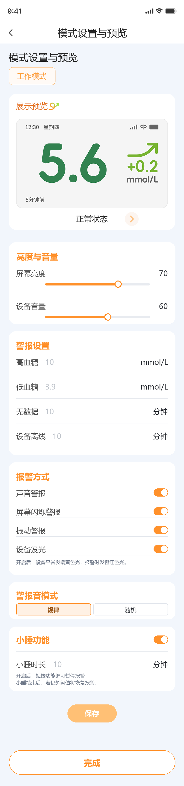
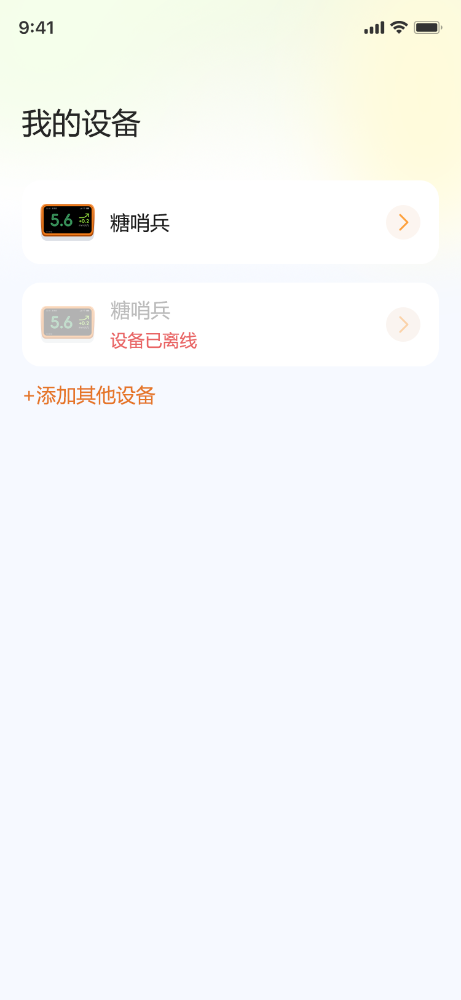

选择血糖单位
设备和 App 将按所选单位显示血糖值。
mmol/L
mg/dL
选择后仍可在“我的”中修改。
用户第一次绑定设备时选择一次，减少后续设备屏幕和 App 单位不一致的风险。
设备和 App 将按所选单位显示血糖值。
基于现有页面新增亮度与音量、报警方式、警报音模式和小睡功能。

报警发生时，用户可直接在 App 内暂停警报，不需要起身到设备旁短按功能键。

当前血糖
设备未收到血糖数据
设备已离线
用户未点小睡，点击页面其他位置时，卡片收起为侧边胶囊；胶囊按报警类型展示“高血糖 14.2 mmol/L”“无数据 10分钟”“已离线 10分钟”。点击胶囊后恢复展开卡片。
点击小睡后，底部卡片收起为侧边倒计时胶囊，展示“小睡中 · mm:ss”。点击胶囊后，展开小睡中卡片，卡片内展示报警信息、小睡倒计时和“停止本次警报”按钮。
当前血糖
当前血糖
小睡功能关闭时，警报卡片不展示小睡按钮，只展示“停止本次警报”按钮。
承载后续修改血糖单位、AI 资料入口和账号相关功能，避免继续挤在设备设置页里。
从“我的”进入，修改后同步影响 App 与设备展示。
设备和 App 将按所选单位显示血糖值。
注册后先连接设备并完成 Wi-Fi 设置，再引导用户填写基础信息，便于糖宝后续提供个体化分析与建议。
完善基础信息后，糖宝可结合您的血糖与健康资料，提供更个体化的分析与建议。
本期只承载已实现的密码相关能力，不扩展更多账号安全项。
从“我的”进入，用户可手动切换 App 展示语言。
面向欧洲演示，英文以自然可读为优先，不按中文逐字直译。
| 中文 | 英文建议 |
|---|---|
| 糖哨兵 | GluSentry |
| 您的全天候血糖守护者 | Your 24/7 glucose guardian |
| 设备 | Device |
| 我的 | Me |
| 设置 | Settings |
| 下一步 | Continue |
| 保存 | Save |
| 完成 | Done |
| 确定 | Confirm |
| 取消 | Cancel |
| 重试 | Retry |
| 返回 | Back |
| 加载中 | Loading... |
| 设置中 | Setting up... |
| 保存中 | Saving... |
| 请稍候 | Please wait. |
| 暂无数据 | No data |
| 已设置 | Set |
| 未设置 | Not set |
| 已连接 | Connected |
| 未连接 | Not connected |
| 已应用 | Applied |
| 应用 | Apply |
| 中文 | 英文建议 |
|---|---|
| 验证码登录 | Sign in with Code |
| 密码登录 | Sign in with Password |
| 请输入手机号码 | Phone number |
| 请输入账号密码 | Password |
| 请输入验证码 | Verification code |
| 获取验证码 | Get code |
| 52s 后重发 | Resend in 52s |
| 登录 | Sign In |
| 忘记密码？ | Forgot password? |
| 没有账号？ | Don’t have an account? |
| 立即注册 | Sign Up |
| 已有账号？ | Already have an account? |
| 去登录 | Sign In |
| 未注册的手机号验证通过后将自动注册并登录 | Unregistered numbers will be automatically signed up and logged in. |
| 我已阅读并同意《糖哨兵服务条款》和《隐私政策》 | I have read and agree to the GluSentry Terms of Service and Privacy Policy. |
| 《糖哨兵服务条款》 | GluSentry Terms of Service |
| 《隐私政策》 | Privacy Policy |
| 同意并继续 | Agree and Continue |
| 请输入正确手机号码 | Enter a valid phone number. |
| 请输入正确密码 | Check your password. |
| 验证码已超时/验证码错误/验证码失效 | Verification code expired / incorrect / invalid. |
| 欢迎注册糖哨兵 | Welcome to GluSentry |
| 请输入 6–16 位密码，支持数字、字母及符号 | Use 6–16 characters. Numbers, letters, and symbols are supported. |
| 忘记密码 | Forgot Password |
| 请输入手机号码和验证码 | Use your mobile number and verification code. |
| 设置新密码 | Set New Password |
| 输入新密码 | New Password |
| 您的新密码必须不同于以前使用的密码 | Your new password must be different from your previous password. |
| 请输入新密码 | New password |
| 请再次输入密码 | Confirm password |
| 密码长度不能少于 6 位 | Password must be at least 6 characters. |
| 两次密码不一致，请检查 | Passwords do not match. |
| 中文 | 英文建议 |
|---|---|
| 添加设备 | Add Device |
| 尚未添加任何设备 | No devices added yet |
| 请选择需要连接的设备 | Select the device to connect. |
| 未找到您的设备？ | Can’t find your device? |
| 重新扫描 | Scan Again |
| 连接 | Connect |
| 未搜索到设备 | No devices found. |
| 请检查设备是否处于可发现状态 | Make sure the device is discoverable. |
| 请将手机尽量靠近要添加的设备 | Keep your phone close to the device you want to add. |
| 重新搜索 | Search Again |
| 连接中，请稍候... | Connecting, please wait... |
| 连接失败 | Connection failed |
| 重新连接 | Reconnect |
| 连接成功 | Connected successfully |
| 中文 | 英文建议 |
|---|---|
| Wi-Fi设置 | Wi-Fi Settings |
| Wi-Fi 设置 | Wi-Fi Settings |
| 请选择Wi-Fi | Choose a Wi-Fi network |
| 选择Wi-Fi | Choose a Wi-Fi network |
| 选择 Wi-Fi | Choose a Wi-Fi network |
| 更换Wi-Fi | Change Wi-Fi network |
| 请输入Wi-Fi密码 | Wi-Fi password |
| 取消 | Cancel |
| 确定 | Confirm |
| 连接失败 | Connection failed |
| 设备无响应，请将设备靠近路由器重试 | Device not responding. Move the device closer to the router and try again. |
| Wi-Fi已连接成功 | Wi-Fi connected |
| 已连接 | Connected |
| 修改Wi-Fi | Change Wi-Fi network |
| 中文 | 英文建议 |
|---|---|
| 血糖源设置 | CGM Connection |
| 输入手机号以查询NS账号 | Enter the mobile number linked to your Nightscout account. |
| 请输入手机号 | Phone number |
| 请输入验证码 | Verification code |
| 获取验证码 | Get code |
| 查询 | Search |
| 23 秒后重发 | Resend in 23s |
| 绑定 | Connect |
| NS绑定成功 | Connected successfully |
| 已绑定NS | Nightscout Connected |
| NS网址 | NS URL |
| 修改血糖源 | Change CGM Connection |
| 中文 | 英文建议 |
|---|---|
| 我的设备 | My Devices |
| 糖哨兵 | GluSentry |
| 设备已离线 | Device offline |
| 添加其他设备 | Add Another Device |
| Wi-Fi设置 | Wi-Fi Settings |
| 血糖源设置 | CGM Connection |
| 模式设置与预览 | Mode Settings & Preview |
| 解绑设备 | Unpair Device |
| 确定解绑设备吗？ | Unpair this device? |
| 蓝牙已断开，尝试连接中... | Bluetooth disconnected. Reconnecting... |
| 蓝牙未打开 | Bluetooth is off |
| 请确保设备已开机并在蓝牙范围内 | Make sure the device is powered on and within Bluetooth range. |
| 连接成功 | Connected successfully |
| 蓝牙未打开 | Bluetooth is off |
| 连接失败 | Connection failed |
| 中文 | 英文建议 |
|---|---|
| 血糖单位 | Glucose Unit |
| 选择血糖单位 | Choose Glucose Unit |
| 设备和 App 将按所选单位显示血糖值。 | The device and app will display readings in the selected unit. |
| 选择后仍可在“我的”中修改。 | You can change this later from Me. |
| 中文 | 英文建议 |
|---|---|
| 模式设置与预览 | Mode Settings & Preview |
| 工作模式 | At work |
| 居家模式 | Home Mode |
| 展示预览 | Display Preview |
| 正常状态 | In Range |
| 高、低血糖状态 | High / Low Glucose |
| 无数据状态 | No Data |
| 设备离线状态 | Device Offline |
| 设备已离线 | Device offline |
| 请检查您的血糖数据源是否正常同步数据 | Check whether your glucose data source is syncing properly. |
| 亮度与音量 | Brightness and volume |
| 屏幕亮度 | Screen Brightness |
| 设备音量 | Device Volume |
| 警报设置 | Alert Settings |
| 高血糖 | High Glucose |
| 低血糖 | Low Glucose |
| 无数据 | No Data |
| 设备离线 | Device Offline |
| 报警方式 | Alert Preferences |
| 声音警报 | Sound |
| 屏幕闪烁警报 | Screen Flash |
| 振动警报 | Vibration |
| 设备发光 | Glow Light |
| 开启后，设备平常发暖黄色光，报警时发橙红色光。 | When enabled, the device glows warm yellow normally and orange-red during alerts. |
| 警报音模式 | Alert sound pattern |
| 规律 | Regular |
| 随机 | Random |
| 小睡功能 | Snooze |
| 小睡时长 | Snooze duration |
| 开启后，短按功能键可暂停报警；小睡结束后，若仍超阈值将恢复报警。 | When enabled, briefly press the function button to pause alerts. Alerts will resume after the snooze period if the condition persists. |
| 高血糖警报 | High Glucose Alert |
| 当前血糖 | Current glucose |
| 14.2 mmol/L · 5分钟前 | 14.2 mmol/L · 5 min ago |
| 无数据警报 | No Data Alert |
| 设备未收到血糖数据 | The device has not received glucose data |
| 设备离线警报 | Device Offline Alert |
| 设备已离线 | Device offline |
| 10分钟 | 10 min |
| 小睡 15 分钟 | Snooze for 15 min |
| 停止 | Stop |
| 高血糖 14.2 mmol/L | High glucose 14.2 mmol/L |
| 无数据 10分钟 | No data 10 min |
| 已离线 10分钟 | Offline 10 min |
| 小睡中 · 14:59 | Snoozing · 14:59 |
| 停止本次警报 | Stop this alert |
| 应用 | Apply |
| 已应用 | Applied |
| 温馨提示 | Heads Up |
| 您已修改了警报设置，但尚未保存，这些修改将不会生效，是否继续？ | You have unsaved changes to your alert settings. Continue without saving? |
| 保存失败，请检查网络连接 | Save failed. Check your network connection. |
| 中文 | 英文建议 |
|---|---|
| 我的 | Me |
| 基础信息 | Profile information |
| 账号与安全 | Account & Security |
| 多语言 | Language |
| 我的设备 | My Devices |
| 退出登录 | Sign Out |
| 密码设置 | Password Settings |
| 中文 | 英文建议 |
|---|---|
| 基础信息 | Profile information |
| 让糖宝更懂您 | Help Tangbao Understand You Better |
| 完善基础信息后，糖宝可结合您的血糖与健康资料，提供更个体化的分析与建议。 | This information you provide helps customize Tangbao to benefit you most. |
| 可稍后从“我的 - 基础信息”修改或补充。 | You can change your personal info any time from Me → Profile information. |
| 希望糖宝怎么称呼您 | What should Tangbao call you? |
| 性别 | Gender |
| 男 | Male |
| 女 | Female |
| 出生日期 | Date of Birth |
| 身高 | Height |
| 体重 | Weight |
| 患病类型 | Diabetes type |
| 确诊时间 | Time since diagnosis |
| 治疗方案 | Treatment plan |
| 请选择 | Select |
| T1DM（1型糖尿病） | Type 1 Diabetes (T1D) |
| T2DM（2型糖尿病） | Type 2 Diabetes (T2D) |
| GDM（妊娠糖尿病） | GDM (Gestational Diabetes) |
| 其他类型糖尿病 | Other diabetes |
| 胰岛素泵 | Insulin pump |
| 餐前+基础 | Basal-bolus insulin |
| 预混胰岛素 | Premixed insulin |
| 降糖药物治疗 | Glucose-lowering medication |
| 生活方式干预 | Lifestyle management |
| 周制剂 | Once-weekly injection |
| 混合闭环胰岛素输注系统 | Hybrid closed-loop system |
| 胰岛素类型 | Insulin type |
| 胰岛素泵类型 | Insulin pump type |
| 血糖监测 | Glucose Monitoring |
| 这些信息仅用于糖宝后续交流时参考，不会用于其他用途，也不会向任何第三方共享，请放心填写。 | This information is strictly used to help Tangbao assist you better. It will never be shared with third parties or used for other purposes. |
| 中文 | 英文建议 |
|---|---|
| 多语言 | Language |
| 简体中文 | 简体中文 |
| English | English |
| 保存失败，请重试 | Couldn’t save. Please try again. |
| 中文 | 英文建议 |
|---|---|
| 确认关闭全部报警方式？ | Turn off all alarm methods? |
| 关闭后，设备可能无法在警报条件触发时提醒你。建议至少保留一种报警方式。 | If you turn off all alert methods, you won't be notified when your glucose is out of range. We recommend keeping at least one method on. |
| 保留报警 | Keep alerts on |
| 仍要关闭 | Turn off anyway |
| 保存失败，请重试 | Couldn’t save. Please try again. |
关闭后，设备可能无法在警报条件触发时提醒你。建议至少保留一种报警方式。